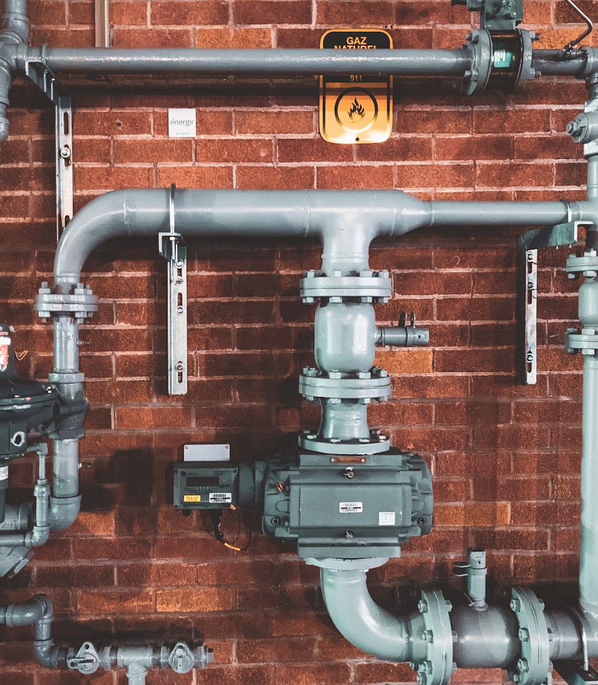

Dépannage en urgence
Fuite d'eau, rupture de canalisation, dégât des eaux. On stoppe le problème et on répare durablement.
Disponible 7j/7 · Amiens & Somme
Fuite d'eau, canalisation bouchée, panne de chauffage ? Un artisan qualifié intervient rapidement chez vous. Diagnostic clair, devis gratuit, travail soigné.

Nos prestations
Une expertise complète pour les particuliers et les professionnels d'Amiens et de la Somme.
Fuite d'eau, rupture de canalisation, dégât des eaux. On stoppe le problème et on répare durablement.
Détection précise sans casse inutile (caméra, gaz traceur, acoustique) pour localiser l'origine de la fuite.
Évier, WC, douche, colonne. Débouchage mécanique et hydrocurage des canalisations bouchées.
Installation et remplacement de WC, lavabo, douche, robinetterie, chauffe-eau et ballon.
Installation, entretien et dépannage de radiateurs, chaudières et planchers chauffants.
Pose et maintenance de climatiseurs pour un confort toute l'année, été comme hiver.

Pourquoi nous choisir
Comment ça marche
Décrivez votre problème par téléphone. On évalue l'urgence et on vous oriente immédiatement.
Sur place, diagnostic précis et devis gratuit validé avec vous avant toute intervention.
Réparation soignée et nettoyage du chantier. Vous repartez avec une installation fiable.
Zones d'intervention
Un dépannage plomberie de proximité, partout dans le département 80.
Nos engagements
Un artisan local déclaré, un travail transparent et garanti — du premier appel à la fin du chantier.
Le prix est annoncé et validé avec vous avant toute intervention. Aucune surprise sur la facture.
Fuite, dégât des eaux, panne de chauffage : les urgences sont traitées en priorité, 7j/7.
Des réparations soignées et durables, réalisées dans les règles de l'art.
Entreprise immatriculée (SIRET 793 539 404 00020), basée dans la Somme, proche de chez vous.
Déjà dépanné par nos soins ? Laissez un avis pour aider d'autres habitants de la Somme.
Questions fréquentes
Oui. Nous assurons un service de dépannage plomberie 7j/7, y compris les soirs et week-ends, pour les fuites d'eau, dégâts des eaux et canalisations bouchées dans Amiens et la Somme.
Oui, l'établissement du devis est gratuit et sans engagement. Nous vous communiquons le prix avant toute intervention.
Nous intervenons à Amiens et dans tout le département de la Somme (80) : Abbeville, Albert, Doullens, Corbie, Péronne, Montdidier, Roye, ainsi que les communes alentours.
Pour une urgence dans le secteur d'Amiens, nous nous efforçons d'intervenir dans l'heure. Le délai dépend de votre localisation et de la nature du dépannage.
Le tarif dépend de la nature de l'intervention (recherche de fuite, débouchage, remplacement de pièce, dépannage chauffage…). Nous établissons systématiquement un devis gratuit et détaillé, validé avec vous avant de commencer les travaux.
Coupez l'arrivée d'eau au robinet général et, si la fuite est proche d'une prise ou d'un tableau, coupez l'électricité de la zone concernée. Épongez l'eau, dégagez l'accès, puis appelez-nous : nous vous guidons par téléphone jusqu'à notre arrivée.
Une fuite d'eau qui s'aggrave, des toilettes bouchées un dimanche soir, un chauffe-eau en panne en plein hiver : la plomberie ne prévient jamais. Dépannage Plomberie 80 intervient à Amiens et dans tout le département de la Somme pour remettre votre installation en service rapidement, avec un devis annoncé à l'avance.
Artisan plombier chauffagiste, nous traitons aussi bien le dépannage d'urgence (fuite, dégât des eaux, rupture de canalisation) que la recherche de fuite non destructive, le débouchage de canalisations, l'installation et le remplacement de sanitaires (WC, lavabo, douche, robinetterie, chauffe-eau), ainsi que le chauffage et la climatisation. Chaque chantier est laissé propre et fonctionnel.
Basés dans la Somme, nous connaissons le secteur d'Amiens, d'Abbeville, d'Albert, de Doullens, de Corbie ou de Péronne et restons joignables 7 j/7 pour les urgences. Un doute sur la marche à suivre ? Appelez-nous au 06 19 72 90 80, nous vous orientons immédiatement.
Contact & devis
Réponse rapide, devis gratuit. Le plus simple pour une urgence reste l'appel téléphonique.